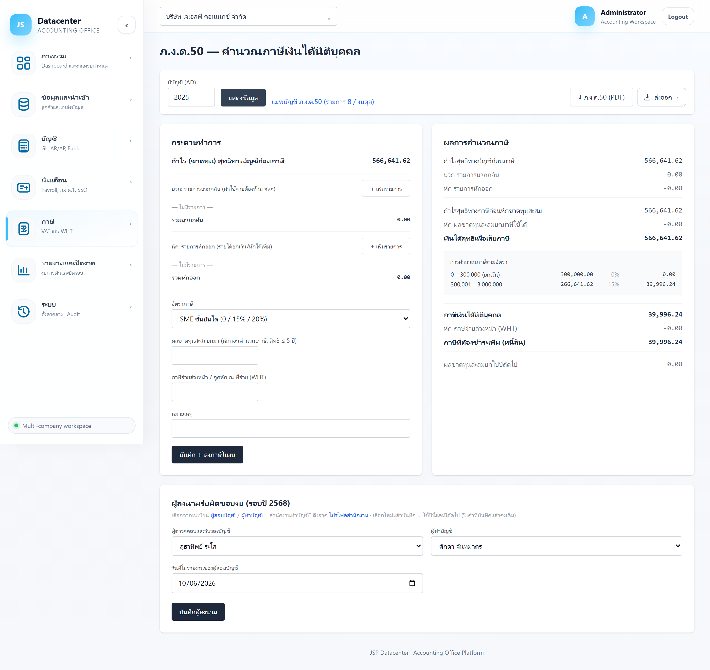
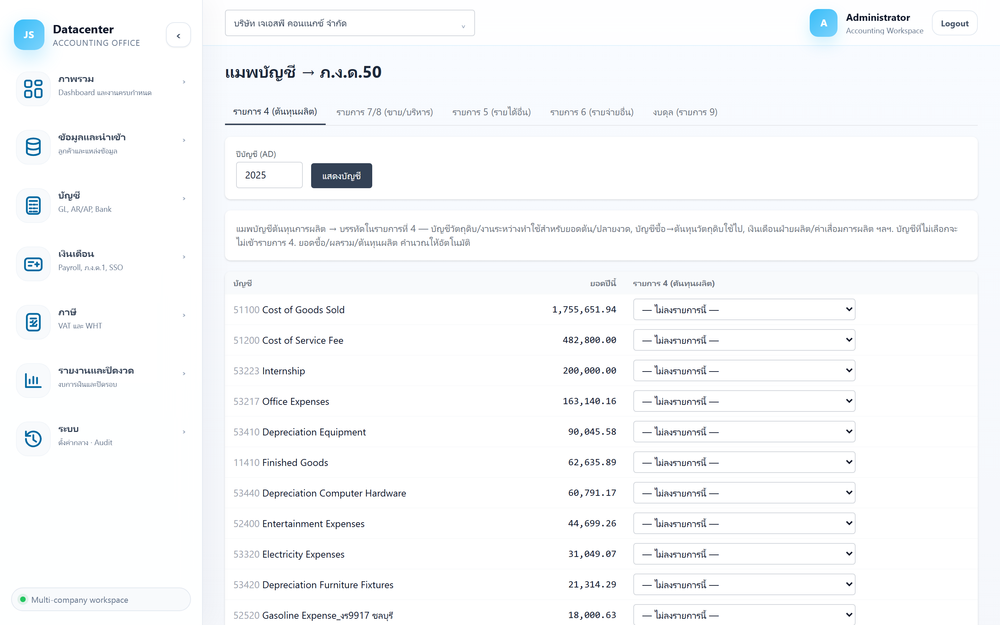

ภ.ง.ด.50 — ภาษีเงินได้นิติบุคคล
กระดาษทำการคำนวณภาษีเงินได้นิติบุคคลปลายปี — กำไรทางบัญชี → บวกกลับ/หักออก → หักขาดทุนสะสม → คำนวณภาษีตามอัตรา → หัก WHT พร้อม ออกไฟล์ PDF แบบ ภ.ง.ด.50 และ ลงภาษีกลับเข้างบการเงินให้อัตโนมัติ
หน้าอื่นเป็นรายงานอ่านอย่างเดียว แต่หน้านี้ กรอกและบันทึกได้ — และเมื่อกดบันทึก ระบบจะ ลงภาษีเงินได้นิติบุคคลเข้างบการเงิน ให้ด้วย
1. การเข้าใช้งาน
- เลือกบริษัทลูกค้า ที่แถบด้านบน
- เปิดเมนู ภาษี → ภ.ง.ด.50
- กรอก ปีบัญชี (ค.ศ.) แล้วกด แสดงข้อมูล
ตัวเลข “กำไรสุทธิทางบัญชีก่อนภาษี” ดึงมาจากงบการเงินของปีนั้น — ต้องนำเข้าข้อมูล ลงบัญชี และทำรายการปรับปรุงปิดงบให้เรียบร้อยก่อน ไม่งั้นฐานภาษีจะผิดตั้งแต่บรรทัดแรก
2. โครงหน้าจอ

| ส่วน | หน้าที่ |
|---|---|
| กระดาษทำการ (ซ้าย) | ช่องที่กรอกเอง — รายการบวกกลับ/หักออก, อัตราภาษี, ขาดทุนสะสม, WHT |
| ผลการคำนวณภาษี (ขวา) | คำนวณสดทันทีที่พิมพ์ ยังไม่บันทึกจนกว่าจะกดปุ่ม |
| ผู้ลงนามรับผิดชอบงบ (ล่าง) | เลือกผู้สอบบัญชีและผู้ทำบัญชีของรอบปีนั้น |
| ⬇ ภ.ง.ด.50 (PDF) | ออกไฟล์แบบ ภ.ง.ด.50 ที่กรอกค่าให้แล้ว |
| แมพบัญชี ภ.ง.ด.50 | ลิงก์ไปหน้าตั้งค่าว่าบัญชีไหนลงบรรทัดไหนของแบบ (ดูข้อ 6) |
ถ้าระบบตรวจพบเรื่องที่ควรดูก่อน (เช่น งบยังไม่สมดุล หรือยังไม่ได้ปรับปรุงบางรายการ) จะขึ้นกล่องสีเหลืองอยู่เหนือกระดาษทำการ — อ่านให้ครบก่อนสรุปภาษี
3. กระดาษทำการ — ช่องที่ต้องกรอก
3.1 รายการบวกกลับ
กด + เพิ่มรายการ แล้วกรอกคำอธิบายกับจำนวนเงิน เพิ่มได้ไม่จำกัดบรรทัด (กดถังขยะเพื่อลบ)
ค่าใช้จ่ายที่ลงบัญชีแล้วแต่ ภาษีไม่ให้หัก จึงต้องบวกกลับเข้ากำไร เช่น ค่ารับรองส่วนเกิน, ค่าปรับ/เงินเพิ่มภาษี, รายจ่ายส่วนตัว, ค่าเสื่อมส่วนที่เกินอัตราภาษี
3.2 รายการหักออก
รูปแบบเดียวกับบวกกลับ
รายได้ที่ลงบัญชีแล้วแต่ ภาษียกเว้น หรือรายจ่ายที่ หักได้เพิ่ม เช่น เงินปันผลที่ได้รับยกเว้น, รายจ่ายที่หักได้ 2 เท่าตามมาตรการภาษี
3.3 อัตราภาษี
| ตัวเลือก | ใช้เมื่อไร |
|---|---|
| SME ขั้นบันได (0 / 15% / 20%) | บริษัทที่เข้าเกณฑ์ SME — ค่าตั้งต้น และเป็นกรณีที่พบบ่อยที่สุด |
| นิติบุคคลทั่วไป 20% | บริษัทที่ไม่เข้าเกณฑ์ SME — คิด 20% ของกำไรสุทธิทั้งจำนวน |
| กำหนดอัตราเอง | กรณีพิเศษที่ได้รับสิทธิอัตราอื่น — จะมีช่องให้กรอก % |
| ขั้นบันได SME | อัตรา |
|---|---|
| 0 – 300,000 | ยกเว้น (0%) |
| 300,001 – 3,000,000 | 15% |
| ส่วนเกิน 3,000,000 | 20% |
เงื่อนไข SME (ทุนจดทะเบียนชำระแล้วไม่เกิน 5 ล้าน และรายได้ไม่เกิน 30 ล้าน) เป็น หน้าที่ผู้ทำบัญชีตรวจเอง — เลือกผิดอัตราแล้วภาษีจะผิดทั้งจำนวน
3.4 ผลขาดทุนสะสมยกมา
กรอกยอดขาดทุนสะสมที่ยังใช้สิทธิได้ (ตามกฎหมาย ไม่เกิน 5 ปี)
หักได้ไม่เกินกำไรของปีนั้น — ส่วนที่เหลือจะแสดงเป็น “ผลขาดทุนสะสมยกไปปีถัดไป” และถ้าปีนี้ขาดทุน ระบบจะบวกยอดขาดทุนปีนี้เข้าไปในยอดยกไปให้เอง
ต้องกรอกเฉพาะยอดที่ ยังไม่หมดอายุ เอง — ระบบเก็บเป็นตัวเลขก้อนเดียว ไม่ได้แยกว่าขาดทุนก้อนไหนมาจากปีไหน ควรทำตารางคุมอายุขาดทุนไว้ต่างหาก
3.5 ภาษีจ่ายล่วงหน้า / ถูกหัก ณ ที่จ่าย (WHT)
กรอกยอดภาษีที่ถูกหักไว้ระหว่างปี รวมกับ ภ.ง.ด.51 ที่จ่ายไปแล้ว — ระบบเอาไปหักจากภาษีที่คำนวณได้
3.6 หมายเหตุ
บันทึกที่มาของตัวเลขหรือข้อสมมติไว้ให้ตัวเองและผู้สอบบัญชีอ่านทีหลัง
4. อ่านผลการคำนวณ
| บรรทัด | ความหมาย |
|---|---|
| กำไรสุทธิทางบัญชีก่อนภาษี | ดึงจากงบการเงิน — แก้ที่นี่ไม่ได้ |
| บวก รายการบวกกลับ | ผลรวมรายการบวกกลับที่กรอก |
| หัก รายการหักออก | ผลรวมรายการหักออกที่กรอก |
| กำไรสุทธิทางภาษีก่อนหักขาดทุนสะสม | กำไรทางบัญชี + บวกกลับ − หักออก |
| หัก ผลขาดทุนสะสมยกมาที่ใช้ได้ | ยอดที่ใช้ได้จริงในปีนี้ |
| เงินได้สุทธิเพื่อเสียภาษี | ฐานที่ใช้คำนวณภาษี (ไม่ติดลบ) |
| การคำนวณภาษีตามอัตรา | กล่องแสดงการคิดทีละขั้น (ฐาน × อัตรา = ภาษี) |
| ภาษีเงินได้นิติบุคคล | ภาษีที่คำนวณได้ทั้งจำนวน |
| หัก ภาษีจ่ายล่วงหน้า (WHT) | ยอดที่จ่าย/ถูกหักไว้แล้ว |
| ภาษีที่ต้องชำระเพิ่ม (หนี้สิน) | ถ้าผลลัพธ์เป็นบวก — ตั้งเป็นหนี้สินในงบ |
| ภาษีชำระไว้เกิน — ขอคืน (สินทรัพย์) | ถ้าผลลัพธ์เป็นลบ — ตั้งเป็นสินทรัพย์ในงบ |
| ผลขาดทุนสะสมยกไปปีถัดไป | ยอดที่ต้องนำไปกรอกในช่องขาดทุนสะสมของปีหน้า |
ตัวเลขฝั่งขวาอัปเดตทันทีที่พิมพ์ ใช้ลองสมมติได้อิสระ — ยังไม่มีอะไรถูกบันทึกจนกว่าจะกดปุ่มบันทึก
5. บันทึก + ลงภาษีในงบ
กดปุ่ม บันทึก + ลงภาษีในงบ เมื่อสรุปตัวเลขแล้ว
- บันทึกกระดาษทำการภาษีของปีนั้น (เปิดมาครั้งหน้าจะได้ค่าเดิม)
- ลงภาษีเงินได้นิติบุคคลเข้างบการเงิน — ตัวเลขในงบกำไรขาดทุนและงบฐานะการเงินจะเปลี่ยนตาม
ถ้าแก้ตัวเลขภาษีทีหลัง ต้องกดบันทึกใหม่ ไม่งั้นงบจะยังค้างภาษีตัวเก่า
บันทึกสำเร็จจะขึ้น บันทึกแล้ว ✓ · ถ้าไม่สำเร็จจะขึ้นข้อความสีแดงให้ตรวจข้อมูล
ผู้ลงนามรับผิดชอบงบ
| ช่อง | คำอธิบาย |
|---|---|
| ผู้ตรวจสอบและรับรองบัญชี | เลือกจากทะเบียนผู้สอบบัญชีที่ตั้งไว้ในเมนูระบบ |
| ผู้ทำบัญชี | เลือกจากทะเบียนผู้ทำบัญชี |
| วันที่ในรายงานของผู้สอบบัญชี | วันที่ที่จะพิมพ์ลงรายงานผู้สอบบัญชี |
ผู้ลงนามเก็บ รายปี เพราะเปลี่ยนได้ทุกปี — เลือกใหม่แล้วบันทึกจะมีผลกับปีนั้นและปีถัดไป ส่วนปีเก่าที่บันทึกไว้แล้วยังคงเดิม กดปุ่ม บันทึกผู้ลงนาม แยกจากปุ่มบันทึกภาษี
6. หน้า “แมพบัญชี → ภ.ง.ด.50”
แบบ ภ.ง.ด.50 มีรายการย่อยที่ละเอียดกว่าผังบัญชีทั่วไป หน้านี้ใช้บอกระบบว่า บัญชีไหนควรลงบรรทัดไหนของแบบ ตั้งครั้งเดียวใช้ได้ทุกปี

| แท็บ | ใช้แมพอะไร |
|---|---|
| รายการ 4 (ต้นทุนผลิต) | บัญชีต้นทุนการผลิต — วัตถุดิบ/งานระหว่างทำ (ใช้เป็นยอดต้น-ปลายงวด), บัญชีซื้อ, เงินเดือนฝ่ายผลิต, ค่าเสื่อมการผลิต · ยอดซื้อ/ผลรวม/ต้นทุนผลิต ระบบคำนวณให้เอง |
| รายการ 7/8 (ขาย/บริหาร) | ค่าใช้จ่ายขายและบริหาร — บัญชีที่ไม่เลือกจะลง “รายจ่ายอื่น” อัตโนมัติ |
| รายการ 5 (รายได้อื่น) | รายได้อื่นนอกจากรายได้หลัก |
| รายการ 6 (รายจ่ายอื่น) | รายจ่ายอื่นและต้นทุนทางการเงิน |
| งบดุล (รายการ 9) | บัญชีสินทรัพย์/หนี้สิน เช่นแยก “ที่ดิน+อาคาร” ออกจาก “ทรัพย์สินอื่น” — ยอดรวมไม่เปลี่ยน เปลี่ยนแค่บรรทัดที่ลง |
เลือกปีบัญชี → กด แสดงบัญชี → ในตารางจะเห็นบัญชีพร้อมยอดปีนี้ เลือกบรรทัดปลายทางของแต่ละบัญชี → ปุ่ม บันทึกการแมพ จะปรากฏเมื่อมีการแก้ไข
บัญชีที่แมพไปรายการ 4 หรือ 6 แล้ว จะไม่แสดงในแท็บรายการ 7/8 อีก — กันไม่ให้บัญชีเดียวถูกนับสองรอบ
7. ออกไฟล์ PDF
กด ⬇ ภ.ง.ด.50 (PDF) ได้ไฟล์ pnd50-{ปี พ.ศ.}.pdf ที่กรอกค่าลงในแบบให้แล้ว
ใช้ตรวจทานก่อนกรอกในระบบ e-Filing หรือเก็บเป็นหลักฐานประกอบแฟ้มงบ
PDF สร้างจากข้อมูลที่บันทึกไว้ ไม่ใช่ตัวเลขที่กำลังพิมพ์อยู่บนหน้าจอ — กดบันทึกก่อนเสมอ
8. ปัญหาที่พบบ่อย
| อาการ | สาเหตุและวิธีแก้ |
|---|---|
| ขึ้น “ไม่พบข้อมูล” | ปีนั้นยังไม่มีงบการเงิน — นำเข้าและลงบัญชีปีนั้นให้เรียบร้อยก่อน |
| กำไรก่อนภาษีไม่ตรงกับงบ | งบเปลี่ยนหลังจากคำนวณภาษีไว้ — กด “แสดงข้อมูล” ใหม่ แล้วบันทึกซ้ำเพื่อให้งบกับภาษีตรงกัน |
| ภาษีที่ได้ดูสูงผิดปกติ | ตรวจว่าเลือกอัตราภาษีถูกหรือไม่ (SME ขั้นบันได vs 20%) และกรอกขาดทุนสะสมครบหรือยัง |
| งบยังแสดงภาษีตัวเก่า | แก้แล้วยังไม่ได้กดบันทึก — กด “บันทึก + ลงภาษีในงบ” อีกครั้ง |
| ช่องผู้ลงนามไม่มีให้เลือก | ยังไม่ได้เพิ่มรายชื่อในทะเบียนผู้สอบบัญชี/ผู้ทำบัญชีที่เมนูระบบ |
| ค่าใช้จ่ายไปกองที่ “รายจ่ายอื่น” หมด | ยังไม่ได้แมพบัญชีในแท็บรายการ 7/8 — ไปตั้งที่หน้าแมพบัญชี |
งานปิดงบทั้งหมดอยู่ในกลุ่ม รายงานและปิดงวด — เริ่มที่ กระดาษทำการปิดงบ (คู่มือกำลังจัดทำ)